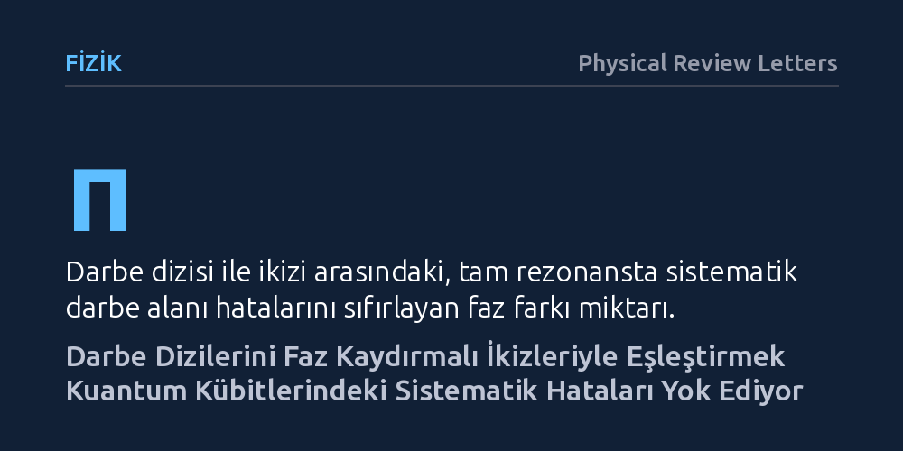

FIZIK · Physical Review Letters · 2026-10-26
Kuantum işlemcilerde darbe alanı ve frekans kayması hatalarını önlemek amacıyla 'ikiz dinamik ayrıştırma' adlı yeni bir dizi ailesi geliştirildi. Süperiletken kübitlerde test edilen bu yöntem, darbelerin faz kaydırmalı ikizleriyle eşleştirilmesi sayesinde yaygın protokollere kıyasla hataları çok daha güçlü biçimde bastırdı.
Kuantum bilgisayarların donanımsal darbe hatalarına karşı direncini artırmak için karmaşık yeni cihazlara değil, kübitleri denetleyen elektromanyetik darbelerin fazlarını doğru sırayla eşleştirmeye ihtiyaç olduğunu gösteriyor.

Kuantum bilgisayarlar, klasik bilgisayarların çözmekte yetersiz kaldığı son derece karmaşık hesaplamaları başarma vaadi taşır; ancak bu potansiyelin önünde büyük bir fiziksel engel bulunur: kübitlerin kırılganlığı. Kübit adı verilen kuantum bilgi birimleri, çevrelerindeki en ufak elektromanyetik gürültüden ve sıcaklık dalgalanmalarından etkilenerek taşıdıkları bilgiyi mikrosaniyeler içinde yitirebilir. Fizikçiler kübitleri bu çevresel etkilerden korumak amacıyla "dinamik ayrıştırma" adı verilen bir yöntem kullanır; bu yaklaşımda kübitlere belirli aralıklarla mikrodalga darbeleri gönderilerek gürültünün etkisi dengelenmeye çalışılır.
Ne var ki bu koruma hamlesi kendi içinde yeni bir açmaz yaratır. Kübiti çevreden yalıtmak için gönderilen elektromanyetik darbelerin süresi, genliği ya da şiddeti laboratuvar koşullarında hiçbir zaman kusursuz biçimde ayarlanamaz. Darbe alanındaki küçük bir sistematik sapma veya hedeflenen rezonans frekansından ufak bir kayma, her darbede birikerek kübitin durumunu bozar. Başka bir deyişle, kübiti dış gürültüden kurtarmaya çalışırken bu kez de kontrol donanımının kendi kusurları yüzünden bilgi kaybı yaşanır.
Araştırmacılar bu kısır döngüyü aşmak amacıyla "ikiz dinamik ayrıştırma" adını verdikleri yeni bir analitik yöntem geliştirdi. Yöntemin temel mekanizması, uygulanan bir darbe dizisinin hemen ardına, onun pi kadar (yani 180 derece) faz kaydırılmış bir "ikizini" yerleştirmeye dayanıyor. Bu simetrik eşleşme sayesinde, darbelerin şiddetindeki ve alanındaki sistematik hatalar tam rezonans durumunda matematiksel olarak birbirini bütünüyle sıfırlıyor; hata hangi mertebeden olursa olsun karşıt ikizi tarafından dengeleniyor.
Darbe alanındaki hataların yanı sıra, kuantum donanımlarında hedeflenen frekanstan sapmalar da kontrol kalitesini ciddi biçimde düşürür. Araştırma ekibi, diziyi oluşturan her bir darbenin faz açısını belirleyen genel ve sade bir analitik formül türetti. Keyfi dizi uzunluklarına uyarlanabilen bu formül, sistem rezonanstan sapsa dahi frekans kayması hatalarını teorik olarak mümkün olan en yüksek dereceden bastıracak faz açılarının doğrudan hesaplanmasını sağlıyor.
Türetilen analitik yöntem sadece teorik hesaplarda veya bilgisayar simülasyonlarında bırakılmayıp günümüzün en gelişmiş süperiletken kuantum işlemcileri üzerinde bizzat denendi. Deneyler, IBM'in "ibm_torino" işlemcisi ile IQM firmasının "Garnet" işlemcisinde yer alan süperiletken transmon kübitler kullanılarak gerçekleştirildi. Kübitlere yeni ikiz darbe dizileri uygulandı ve kübitlerin kuantum durumlarını ne kadar süreyle koruyabildiği hassas biçimde kaydedildi.
Elde edilen deneysel ölçümler, teorik modellemelerle neredeyse birebir örtüştü. Kübit popülasyonunun kararlı kaldığı zaman aralıklarını gösteren ölçüm platoları, yeni ikiz dizilerin günümüzde laboratuvarlarda en sık başvurulan standart dinamik ayrıştırma protokollerine kıyasla çok daha dayanıklı olduğunu ortaya koydu. Yöntem, farklı mühendislik yaklaşımlarıyla üretilmiş iki ayrı kuantum bilgisayarında da donanımsal darbe kusurlarına ve frekans sapmalarına karşı eşzamanlı direnç gösterdi.
Bu çalışmanın en önemli pratik değeri, kuantum işlemcilerde donanımı baştan inşa etmeye ya da karmaşık yeni kontrol devreleri eklemeye gerek bırakmamasıdır. Binlerce fiziksel kübit ve ağır kaynak gerektiren kuantum hata düzeltme kodları henüz laboratuvar ölçeğindeyken, mevcut gürültülü işlemcilerde yalnızca darbe fazlarını akıllıca sıraya dizerek hata oranını düşürmek büyük bir verimlilik kazandırır.
Geliştirilen matematiksel formülün istenen her dizi uzunluğuna kolayca uyarlanabilmesi, bu protokolün farklı kuantum algoritmalarına hızla entegre edilmesine olanak tanıyacaktır. Kübitleri mikrodalga darbeleriyle yönlendiren tüm kuantum bilgi işlem platformlarına uygulanabilir olan bu strateji, kuantum bilgisayarların günlük hayattaki pratik problemlere yönelik güvenilirliğini artırmada işlevsel bir araç sunuyor.